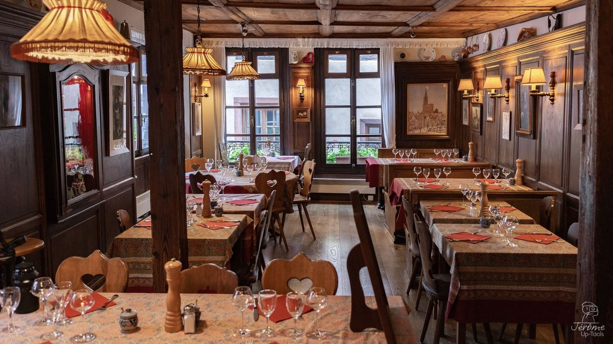
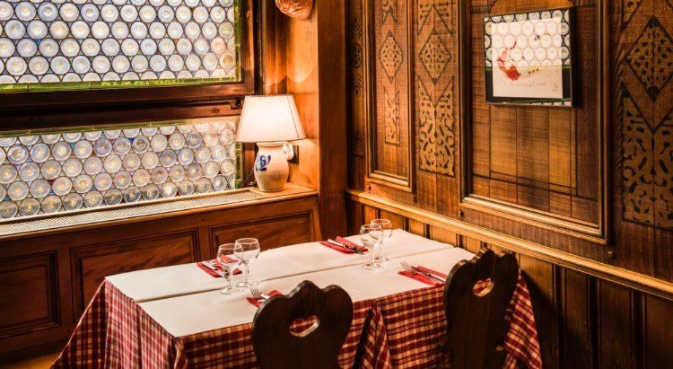
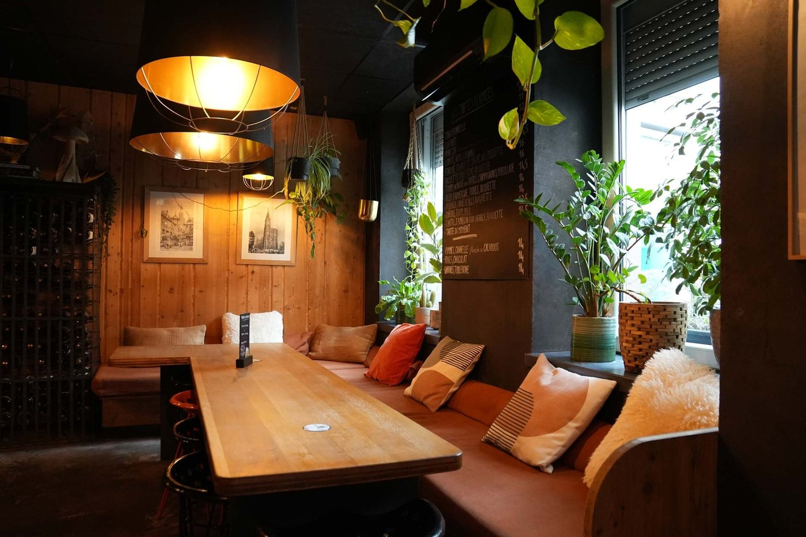
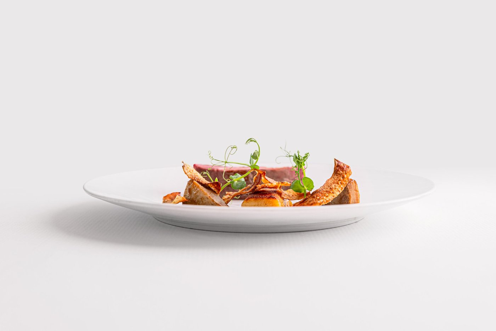
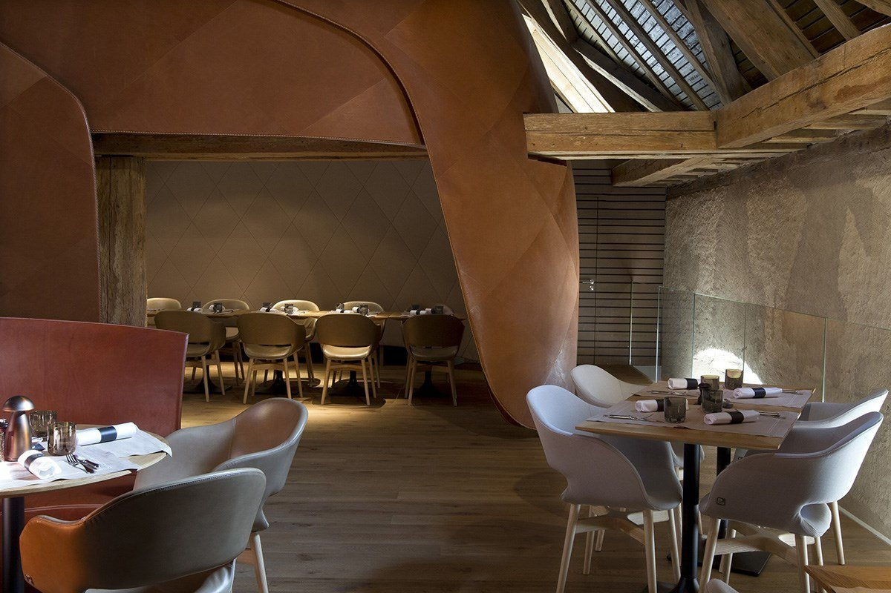

Les 8 meilleures tables de Strasbourg en 2026
Cinq winstubs et trois tables contemporaines, dans une ville où le vrai piège n'est pas l'adresse mais le jour de fermeture. Avec, au passage, une étoile que beaucoup attribuent encore à une maison qui l'a perdue en 2015.

Strasbourg compte une quarantaine de winstubs dans l'hypercentre, et la qualité y est très inégale : certaines vivent sur leur réputation touristique depuis vingt ans. Voici huit tables où la cuisine tient encore ses promesses, cinq winstubs et trois adresses plus contemporaines, avec pour chacune ce qu'il faut savoir avant de réserver.
L'essentielStrasbourg à table en 2026
- La winstub est un format, pas un décor : du mot allemand Weinstube, la pièce à vin. Carte courte, boiseries, vins au pichet, on mange serré.
- Un Bib Gourmand dans cette sélection : Au Pont Corbeau, quai Saint-Nicolas, distingué au Guide Michelin 2026.
- La Casserole n'est plus étoilée depuis 2015. L'information circule encore partout, et elle est fausse.
- Vérifiez les jours : trois de ces huit maisons ferment le samedi ou le dimanche, ce qui est un vrai problème dans une ville de week-end.
Ce que nous avons vérifié
À Strasbourg, les adresses sont stables et les listes s'y trompent peu. Ce qui se périme, ce sont les distinctions et les jours d'ouverture. La Casserole traîne une étoile qu'elle a perdue lors de la reprise de 2015 ; Au Pont Corbeau a gagné un Bib Gourmand que peu de guides mentionnent ; Foudre Feu, ouvert en février 2025, ferme le week-end, ce qui le rend inaccessible à la clientèle de passage.
Les critères éditoriaux sont ensuite ceux de notre grille. Les tables étoilées de la ville, Au Crocodile et Umami, sortent du périmètre de cette sélection, centrée sur les adresses les plus représentatives de l'identité strasbourgeoise.
Les 8 tables
-
01
Winstub Chez Yvonne
Strasbourg · Winstub, depuis 1873
Ouverte en 1873La salle de Chez Yvonne, rue du Sanglier. Photo Jérôme Up-Tools pour la Winstub Chez Yvonne. Chez Yvonne est la winstub que tout le monde connaît et que personne ne se lasse de retrouver. La maison a ouvert en 1873, à deux cents mètres de la cathédrale, et compte parmi les plus anciennes de la ville. Elle doit son nom à Yvonne Haller, qui l'a tenue de 1956 à 2001 ; son enseigne complète reste S'Burjerstuewel.
La salle sent le bois ciré, les serveurs portent le tablier blanc avec une autorité tranquille, et la carte n'a pas bougé depuis des décennies, ce qui est ici un compliment. Choucroute, presskopf en tranches épaisses, foie de veau à la crème, spätzles dorés au beurre : chaque plat est une leçon d'économie culinaire alsacienne. Ce qui peut décevoir : l'affluence touristique en haute saison, et un service parfois expéditif les soirs de plein.
Pour qui ? Ceux qui veulent l'expérience alsacienne la plus complète, et les groupes qui cherchent une valeur sûre.
- Adresse10 rue du Sanglier, 67000 Strasbourg
- Ouverteen 1873
- BudgetOrdre de grandeur : 35 à 50 € avec le vin
- RéservationIndispensable
-
02
Au Pont Corbeau
Strasbourg · Winstub
Bib Gourmand 2026
La salle d'Au Pont Corbeau, quai Saint-Nicolas. Photo Au Pont Corbeau. Au Pont Corbeau est la winstub que les Strasbourgeois recommandent à leurs amis de passage quand ils veulent leur éviter les pièges à touristes. Elle est Bib Gourmand au Guide Michelin 2026, distinction qui récompense précisément le bon rapport qualité prix, et elle jouxte le Musée alsacien, quai Saint-Nicolas.
La maison est familiale, tenue par Christophe puis Coralie Andt, le décor mêle éléments Renaissance et affiches anciennes, et la carte s'appuie sur un réseau de producteurs locaux. Le grumbeerekiechle au bibeleskäs, galette de pomme de terre servie avec du fromage blanc aux herbes, est l'un des meilleurs de la ville, et la tête de veau vinaigrette réconcilie les sceptiques avec les abats.
Pour qui ? Ceux qui veulent manger alsacien sans se ruiner, et les habitués qui reviennent chaque semaine.
- Adresse21 quai Saint-Nicolas, 67000 Strasbourg
- DistinctionBib Gourmand au Guide Michelin 2026
- ServiceDu lundi au vendredi midi et soir, dimanche soir. Fermé le samedi
- Téléphone03 88 35 60 68
-
03
Le Tire-Bouchon
Strasbourg · Winstub et cuisine bourgeoise
À deux pas de la cathédraleInstallé à l'angle de la rue des Tailleurs-de-Pierre et de la rue du Maroquin, à deux pas de la cathédrale, Le Tire-Bouchon aurait toutes les raisons de se reposer sur son emplacement. Il ne le fait pas.
La carte joue sur deux registres : la tradition alsacienne, avec une choucroute aux trois poissons qui surprend agréablement les habitués de la version carnée, et une cuisine bourgeoise française avec un foie gras maison soigné. Les fleischkiechle, ces boulettes de viande panées souvent bâclées ailleurs, sont ici croustillantes dehors et moelleuses à cœur. Ce qui peut décevoir : la proximité de la cathédrale attire une clientèle très touristique en été.
Pour qui ? Les visiteurs qui veulent une winstub sérieuse sans s'éloigner du centre historique.
- Adresse5 rue des Tailleurs-de-Pierre, angle rue du Maroquin, 67000 Strasbourg
- MenusOrdre de grandeur : 32 € et 45 €
- RéservationConseillée
-
04
Fink'Stuebel
Strasbourg · Winstub-auberge
Quartier FinkwillerFink'Stuebel assume pleinement son identité alsacienne sans chercher à moderniser quoi que ce soit, et c'est exactement ce qu'on lui demande. La rue Finkwiller est à l'écart des circuits touristiques, ce qui garantit une clientèle plus locale et une atmosphère plus détendue.
Les fleischnackas, ces roulés de viande et de pâte cuits dans un bouillon de bœuf, y sont préparés selon une recette de famille. Les knepfle, petites quenelles alsaciennes, sont fondants et bien beurrés, et la choucroute arrive dans une poêle en fonte qui garde tout chaud jusqu'à la dernière bouchée. Ce qui peut décevoir : la carte est courte et bouge peu.
Pour qui ? Ceux qui veulent s'éloigner des sentiers battus sans quitter le centre.
- Adresse26 rue Finkwiller, 67000 Strasbourg
- BudgetOrdre de grandeur : 17 à 25 € le plat
- RéservationConseillée le week-end
-
05
Binchstub
Strasbourg · Flammekueche, trois adresses
Produits de fermes alsaciennes
Une salle de Binchstub, bois brut et grandes tablées. Photo Binchstub. La flammekueche dans sa version la plus honnête, c'est ici. Binchstub a fait le choix de ne travailler qu'avec des produits de fermes alsaciennes, et cela s'entend dès la première bouchée : crème épaisse et légèrement acidulée, lardons fumés, pâte fine et croustillante.
Trois adresses en ville, ce qui n'est pas un luxe. L'ambiance est décontractée, les tables en bois brut, les prix accessibles. On commande une, deux, parfois trois tartes selon l'appétit, on les partage, on se ressert de riesling. Ce qui peut décevoir : la carte se limite pour l'essentiel à la flammekueche.
Pour qui ? Les tablées d'amis, les familles, et les budgets serrés qui refusent de manger mal.
- AdressesTrois adresses à Strasbourg
- BudgetOrdre de grandeur : 9 à 15 € la tarte
- RéservationSelon l'adresse, souvent possible sans
-
06
Foudre Feu
Strasbourg · Bistronomie, Krutenau
Ouvert en février 2025Foudre Feu est l'adresse qui manquait à Strasbourg : un bistrot de quartier ancré dans la Krutenau, ouvert le 24 février 2025. Trois personnes l'ont monté après s'être rencontrées au Cafoutche, le bistrot du Théâtre national de Strasbourg : Emmanuelle Verger Monteil, passée par Marcus, et Brice Murit, venu du Cerf à Marlenheim, en cuisine, avec Pauline Schirmer en salle.
La cuisine est de marché, servie en petites assiettes, inventive et franche, avec des accents alsaciens qui ne tombent jamais dans le pastiche. Ce qui peut décevoir : la salle est petite, les places rares, et la maison ferme le samedi et le dimanche, ce qui la rend inaccessible aux visiteurs de week-end.
Pour qui ? Ceux qui veulent découvrir Strasbourg sans les clichés, et qui sont en ville en semaine.
- Adresse42 rue de la Krutenau, 67000 Strasbourg
- Maison deEmmanuelle Verger Monteil, Brice Murit et Pauline Schirmer
- ServiceDu lundi au vendredi. Fermé samedi et dimanche
- Budget36 à 50 €
-
07
La Casserole
Strasbourg · Cuisine moderne
Cédric KusterAu Guide Michelin
Une assiette de La Casserole, rue des Juifs. Photo La Casserole. La Casserole est la meilleure réponse strasbourgeoise à ceux qui cherchent une table sérieuse sans l'apparat intimidant des grandes maisons. La salle de la rue des Juifs est élégante sans être froide, le service précis sans être guindé.
Une précision que beaucoup de listes escamotent : la maison a perdu son étoile lors de la reprise par Cédric Kuster en 2015. Elle figure toujours au Guide Michelin, sans distinction étoilée, et cela ne dit rien de la cuisine, qui est restée l'une des plus précises de la ville : produits de premier choix, dressages minutieux, menus qui suivent les saisons.
Pour qui ? Ceux qui veulent une expérience gastronomique complète, et qui trouvent au déjeuner un tarif nettement plus doux qu'au dîner.
- Adresse24 rue des Juifs, 67000 Strasbourg
- ChefCédric Kuster, depuis 2015
- MenusOrdre de grandeur : déjeuner autour de 45 €, dégustation autour de 115 €
- FermetureDimanche et lundi
-
08
Brasserie Les Haras
Strasbourg · Brasserie, monument historique
Haras nationaux, XVIIIe
La salle des Haras, dans les anciennes écuries. Photo Brasserie Les Haras. Certains restaurants ont un décor qui justifie à lui seul le déplacement. Les Haras est de ceux-là : la brasserie occupe les anciennes écuries du Haras national de Strasbourg, bâtiment du XVIIIe siècle classé monument historique en 1922. Les architectes Jouin Manku en ont signé la réhabilitation, avec cette rampe de bois qui traverse la salle et qu'on n'oublie pas.
La cuisine oscille entre brasserie française de qualité et spécialités alsaciennes revisitées : pâté en croûte, viandes maturées, ris de veau. Ce qui peut décevoir : le cadre attire une clientèle d'affaires et de touristes haut de gamme, ce qui rend l'ambiance un peu formelle en semaine.
Pour qui ? Les grandes occasions, les repas d'affaires, et ceux qui veulent une salle dont ils se souviendront.
- Adresse23 rue des Glacières, 67000 Strasbourg
- CadreHaras nationaux, XVIIIe siècle, classé en 1922
- BudgetOrdre de grandeur : 27 à 44 € le plat
- RéservationIndispensable
Winstub ou table contemporaine, comment choisir
La question revient toujours, et la réponse ne dépend pas du budget. Une bonne winstub peut marquer autant qu'un repas gastronomique, à condition de choisir la bonne. Prenez une winstub si vous voulez manger dans l'esprit de la ville, si vous êtes en groupe, si vous cherchez la choucroute ou le baeckeoffe dans leur version la plus franche. Comptez de 15 à 35 € par personne dans cette sélection.
Prenez une table contemporaine si vous célébrez quelque chose, si vous voulez une signature de chef, et si vous avez le temps : deux heures minimum. Le meilleur compromis, pour un séjour de deux jours, reste de faire les deux, un déjeuner en winstub et un dîner à La Casserole ou aux Haras.
Si c'est le format qui vous intéresse plus que le classement, nos 7 winstubs authentiques de Strasbourg ne traitent que de celui-là, avec les prix relevés à la carte et les jours de fermeture de chaque maison.
Pour élargir, notre palmarès des 15 meilleurs restaurants de France, et pour comparer avec les autres scènes régionales, notre guide Où manger à Lyon et nos 10 meilleurs bouchons lyonnais, l'autre grande tradition de winstub à la française.
Questions fréquentes
Qu'est-ce qu'une winstub, exactement ?
Un format propre à l'Alsace, et non un simple restaurant régional. Le mot vient de l'allemand Weinstube, littéralement la pièce à vin : petite salle en boiseries, banquettes, carte courte centrée sur le répertoire local, vins d'Alsace servis au pichet. On y mange serré, dans le bruit. Un restaurant alsacien peut être plus grand, plus formel, avec une carte plus longue ; la winstub, c'est l'esprit de la table partagée.
Quel est le meilleur restaurant de Strasbourg ?
Cela dépend de ce que vous cherchez. Pour l'expérience winstub la plus complète, Chez Yvonne, rue du Sanglier, ouverte en 1873. Pour le meilleur rapport qualité prix, Au Pont Corbeau, quai Saint-Nicolas, Bib Gourmand au Guide Michelin 2026. Pour une table plus ambitieuse, La Casserole, rue des Juifs. Les tables étoilées de la ville, Au Crocodile et Umami, sortent du périmètre de cette sélection.
Y a-t-il des restaurants étoilés à Strasbourg ?
Oui. Au Crocodile et Umami tiennent chacun une étoile dans l'édition 2026 du Guide Michelin. Une précision utile puisqu'elle circule mal : La Casserole, souvent présentée comme étoilée, ne l'est plus depuis la reprise de la maison par Cédric Kuster en 2015. Elle reste au guide, sans distinction étoilée, ce qui ne dit rien de la qualité de sa cuisine.
Où manger une bonne flammekueche à Strasbourg ?
Binchstub, qui ne travaille qu'avec des produits de fermes alsaciennes : pâte fine, crème épaisse, lardons fumés. Trois adresses en ville et des tartes entre 9 et 15 €, ce qui en fait aussi l'option la plus accessible de cette sélection. Fink'Stuebel, rue Finkwiller, en propose une version correcte dans un cadre de winstub plus complet.
Où manger à Strasbourg un samedi ou un dimanche ?
Attention aux jours de fermeture, qui sont le vrai piège de cette ville. Au Pont Corbeau ferme le samedi et n'ouvre le dimanche que le soir. Foudre Feu ferme samedi et dimanche. La Casserole ferme dimanche et lundi. Pour un week-end, Chez Yvonne, Le Tire-Bouchon, Binchstub et Les Haras sont les valeurs les plus sûres.
Quelles spécialités alsaciennes goûter à Strasbourg ?
La choucroute garnie et le baeckeoffe, bien sûr, mais aussi le presskopf, une terrine de tête pressée servie en tranches épaisses ; les fleischnackas, des roulés de viande et de pâte cuits au bouillon ; les grumbeerekiechle, galettes de pomme de terre, souvent servies avec du bibeleskäs, fromage blanc aux herbes ; les knepfle, petites quenelles ; et la flammekueche.
Sources
Adresses, distinctions et jours de fermeture relevés le 31 août 2026 sur les sites officiels des maisons et sur les pages ci-dessous.
- Guide Michelin, les tables distinguées de Strasbourg, dont Au Crocodile, Umami, Au Pont Corbeau et La Casserole.
- Chez Yvonne, Au Pont Corbeau, La Casserole et Brasserie Les Haras, sites officiels.
- Le Fooding, l'ouverture de Foudre Feu et son équipe.
- Chez Yvonne, ouverture en 1873 et histoire d'Yvonne Haller.
- Binchstub, adresses et carte.
Une maison qui ferme, un jour d'ouverture qui change, une distinction obtenue ou perdue : signalez-le nous. Les corrections sont datées sur la page.
Les photographies d'établissement sont fournies par les maisons et publiées avec leur accord. Toute maison souhaitant le retrait d'une image peut nous écrire : elle est retirée sans délai. Aucune des maisons citées dans cet article n'a été visitée par la rédaction à ce jour.